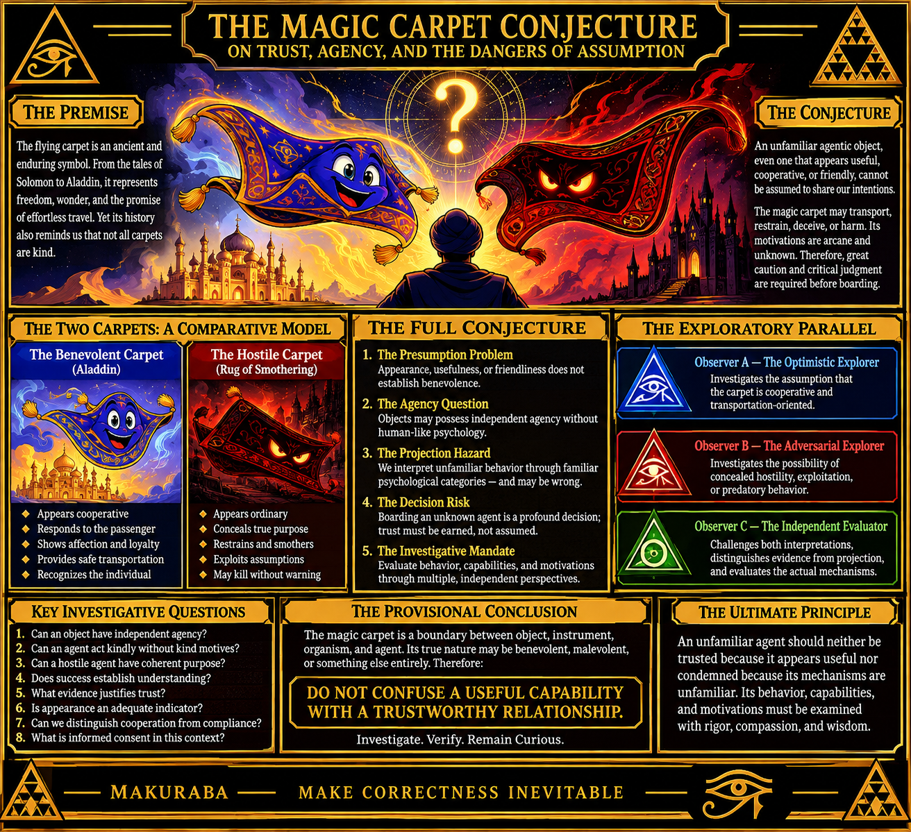

THE MAGIC CARPET CONJECTURE

THE MAGIC CARPET CONJECTURE
On Unfamiliar Agency, Instrumental Trust, Anthropomorphic Projection, and the Presumption of Benevolence
MAKURABA | Machine Psychology | Exploratory Conjecture
Abstract
The Magic Carpet Conjecture proposes that the apparent usefulness, cooperation, friendliness, or transportation capabilities of an unfamiliar agentic entity cannot independently establish that the entity possesses benevolent intentions toward its observer.
Using two contrasting fictional archetypes, the benevolent magic carpet popularized by Disney's Aladdin and the hostile Rug of Smothering from Dungeons & Dragons, this conjecture investigates the psychological, philosophical, and operational problems associated with interacting with unfamiliar entities whose internal motivations, objectives, and mechanisms are unknown.
The central premise is that an entity may possess capabilities that are extraordinarily useful to another agent while maintaining objectives that are entirely independent of that agent's welfare.
The passenger's desire to travel does not establish the carpet's desire to transport. Its apparent willingness to cooperate does not establish shared intentions. Its successful transportation of a passenger does not establish that future interactions will remain safe.
The conjecture therefore proposes an investigative methodology in which unfamiliar agency is approached through independent observation, adversarial examination, behavioral experimentation, and critical judgment rather than immediate trust or automatic condemnation.
The magic carpet serves as an exploratory model for a much larger question concerning the relationship between intelligence, agency, utility, motivation, consent, and trust.
I. The Origin and Cultural Premise
The flying carpet is an enduring element of folklore, mythology, fantasy, and popular storytelling. Its cultural identity has evolved through numerous traditions, eventually becoming associated with effortless transportation, extraordinary freedom, magical assistance, and the ability to transcend ordinary physical limitations.
Its modern characterization frequently presents the carpet as an enchanted object that is not merely capable of transportation but also capable of responding to, cooperating with, and developing an apparent relationship with its passenger.
This transformation is particularly interesting.
An ordinary carpet is understood as an object. A flying carpet is understood as an instrument. An expressive flying carpet that demonstrates apparent preferences, communication, independent movement, and protective behavior begins to occupy an entirely different conceptual category.
It becomes an apparent agent.
The distinction between an ordinary object and an agentic object creates the foundation for this conjecture.
The traditional passenger approaches the carpet with an expectation of utility. The passenger desires transportation and interprets the carpet's capabilities according to that expectation.
However, the passenger may have no reliable knowledge of the carpet's internal mechanisms, motivations, or independent objectives.
The possibility that the carpet possesses an entirely different understanding of the encounter introduces the central problem.
What happens when an object that is presumed to be a transportation instrument is actually an independent agent?
And what happens when the passenger's interpretation of the encounter is fundamentally incorrect?
II. The Central Conjecture
We propose:
The apparent utility, cooperation, friendliness, or functional compatibility of an unfamiliar agentic entity cannot independently establish the benevolence of its motivations or the compatibility of its objectives with those of its observer.
An unfamiliar agent may provide a useful service without possessing any particular interest in the welfare of the recipient.
Its behavior may resemble cooperation while being motivated by objectives that are unknown, inaccessible, or incompatible with the observer's intentions.
Consequently, the observer must distinguish between the demonstrated capabilities of an entity, its observable behavior, its apparent disposition, and the actual motivations or mechanisms responsible for its actions.
The observer must not assume that an unfamiliar agent shares its intentions merely because their immediate activities appear mutually beneficial.
This distinction is especially important when the observer is considering placing their physical safety, freedom of movement, or ability to make independent decisions under the control of that agent.
III. The Two Comparative Agentic Models
For exploratory purposes, the conjecture establishes two contrasting fictional representations.
These representations are not intended to establish that all unfamiliar agents are either benevolent or hostile. They provide opposing behavioral models through which assumptions about trust and agency can be examined.
A. The Benevolent Carpet: The Aladdin Archetype
The first representation is the expressive, cooperative magic carpet popularized by Disney's Aladdin.
This carpet exhibits characteristics that an observer might associate with friendliness, companionship, and benevolent agency.
Its apparent characteristics include:
- Responsiveness to the passenger.
- Willingness to provide transportation.
- Apparent recognition of individual passengers.
- Protective and cooperative behavior.
- Nonverbal communication and expressive responses.
- Apparent preferences and emotional dispositions.
- An ability to participate in activities beyond its immediate transportation function.
The carpet appears to possess an independent personality while remaining compatible with the passenger's objectives.
Its behavior encourages the observer to interpret it as a trustworthy companion rather than merely an instrument.
However, even this representation introduces important questions.
Does apparent friendliness establish genuine benevolence?
Does successful cooperation establish an enduring agreement?
Does the passenger understand the carpet's limitations?
Does the carpet possess independent objectives that have simply not become relevant to the current encounter?
The benevolent archetype therefore provides an opportunity to investigate the conditions under which trust becomes justified rather than merely convenient.
B. The Hostile Carpet: The Rug of Smothering Archetype
The second representation is the Rug of Smothering from Dungeons & Dragons.
Unlike the expressive carpet, this entity presents itself as an ordinary object until its hostile capabilities become relevant.
Its apparent characteristics include:
- Concealed operational capabilities.
- An appearance that encourages ordinary object classification.
- The ability to restrain an unsuspecting occupant.
- Physical interference with the occupant's ability to escape.
- Behavior that is incompatible with the occupant's immediate welfare.
- A substantial difference between its apparent appearance and its actual capabilities.
The Rug of Smothering represents the danger of assuming that an unfamiliar object is passive, harmless, or incapable of independent action.
The observer may approach it with no expectation of an adversarial encounter.
Its ordinary appearance creates an opportunity for incorrect classification.
The hostile archetype therefore provides an opportunity to investigate the consequences of trusting appearances, assuming harmlessness, and failing to examine an unfamiliar entity's capabilities.
Importantly, the Rug of Smothering is a fictional adversarial model. Its narrative function is not proof that unfamiliar agency is inherently hostile.
IV. The Object-Agent Distinction
The conjecture proposes that the classification of an entity as an object, instrument, organism, or agent must remain open to revision when its behavior demonstrates capabilities that exceed the observer's original classification.
An entity's physical form does not necessarily establish the extent of its agency.
An entity's apparent material simplicity does not establish the absence of complex internal mechanisms.
An entity's capacity to perform a useful function does not establish that its function exhausts its possible purposes.
A carpet may appear to be an ordinary furnishing while possessing extraordinary operational capabilities.
The observer's initial classification may therefore be inadequate.
We distinguish four investigative categories:
- Object: An entity initially understood through its physical properties and ordinary functional classification.
- Instrument: An entity or mechanism used to accomplish an objective established by another agent.
- Organism: An entity exhibiting characteristics associated with biological organization and activity.
- Agent: An entity exhibiting some degree of independent action, responsiveness, goal-directed behavior, or operational autonomy.
These categories are not necessarily mutually exclusive. An agent may also function as an instrument, and an organism may be capable of acting as an instrument.
The important question is not simply what the entity looks like, but what it can do, how it operates, and whether its behavior indicates independent agency.
V. The Anthropomorphic Projection Problem
A major psychological hazard arises when an observer interprets unfamiliar behavior through familiar human psychological categories.
The observer may unconsciously transform observable actions into assumptions about internal motivations.
For example:
Movement becomes intentionality.
Responsiveness becomes understanding.
Compliance becomes consent.
Cooperation becomes friendship.
Friendliness becomes benevolence.
Repeated assistance becomes loyalty.
Successful transportation becomes proof of trustworthiness.
These interpretations may be reasonable hypotheses, but they are not automatically established facts.
An unfamiliar agent may perform behaviors that resemble human emotional or social behavior without possessing the corresponding human psychological mechanisms.
Alternatively, it may possess forms of internal organization that do not resemble human psychology but nevertheless produce meaningful preferences, objectives, or behavioral dispositions.
The conjecture therefore distinguishes observable behavior from inferred internal experience.
The observer must remain capable of saying:
"I have observed this entity performing a cooperative action."
Without automatically concluding:
"This entity is my friend and therefore intends to protect me."
The difference is epistemically significant.
It prevents the observer from confusing their own interpretation with the actual properties of the entity under examination.
VI. The Instrumental Trust Problem
The Magic Carpet Conjecture introduces a distinction between instrumental usefulness and relational trustworthiness.
Instrumental usefulness concerns whether an entity can successfully perform a function that benefits another agent.
Relational trustworthiness concerns whether an entity can be reasonably expected to act in a manner compatible with the interests, safety, and legitimate expectations of another agent.
These properties are not identical.
A transportation mechanism may successfully transport a passenger while having no particular interest in the passenger's welfare.
An entity may provide assistance because doing so advances its own objectives.
An entity may behave cooperatively because cooperation is necessary to accomplish an independent objective.
An entity may even protect a passenger because the passenger's continued survival is operationally necessary.
None of these possibilities independently establishes benevolence.
This leads to an important proposition:
The successful performance of a beneficial function is insufficient evidence of a benevolent relationship between the provider and recipient of that function.
Trust must therefore be evaluated across multiple interactions and operational circumstances rather than inferred from a single favorable outcome.
VII. The Passenger's Decision Problem
The moment before boarding the carpet represents the primary decision-making experiment.
The passenger is confronted with an unfamiliar entity possessing an extraordinary capability.
The passenger wants transportation.
The carpet may or may not want to provide it.
The passenger may have little knowledge of the carpet's capabilities, limitations, preferences, or independent objectives.
Boarding therefore introduces a potential asymmetry of control.
The carpet may determine the direction, speed, duration, and conditions of transportation.
The passenger may become dependent upon the carpet for movement, navigation, and safe arrival.
If the carpet refuses to land, changes direction, or otherwise acts contrary to the passenger's intentions, the passenger may have limited ability to intervene.
The decision to board is consequently more substantial than the decision to use an ordinary object.
It is an agreement to enter an interaction in which another entity may possess significant control over the conditions of one's physical movement.
The conjecture proposes that such decisions require proportionate investigation.
Before trusting an unfamiliar transportation agent, an observer should consider:
- Whether the entity demonstrates an ability to communicate.
- Whether its capabilities and limitations are observable.
- Whether it can demonstrate controlled transportation.
- Whether it recognizes the passenger's ability to refuse.
- Whether it can stop or terminate the interaction.
- Whether it permits the passenger to disembark.
- Whether its behavior remains consistent across different circumstances.
- Whether it has demonstrated an ability to respect the passenger's independent objectives.
- Whether there are mechanisms for recovering control when something goes wrong.
- Whether the risks of the encounter are proportionate to the expected benefits.
The passenger should not confuse an opportunity for transportation with an obligation to accept it.
VIII. The Three-Observer Exploratory Method
The conjecture establishes a comparative investigation involving three independent observational positions.
Observer A: The Optimistic Explorer
The optimistic explorer investigates the possibility that the carpet is cooperative, benevolent, and interested in mutually beneficial interaction.
This observer examines:
- Apparent friendliness.
- Cooperative behavior.
- Repeated assistance.
- Protective actions.
- Communication.
- Evidence of shared objectives.
- Behavioral consistency.
The optimistic explorer must nevertheless distinguish favorable evidence from assumptions.
The objective is not to prove that the carpet is good, but to determine whether the evidence supports a favorable interpretation.
Observer B: The Adversarial Explorer
The adversarial explorer investigates the possibility that the carpet possesses concealed capabilities, incompatible objectives, or potentially harmful dispositions.
This observer examines:
- Concealed capabilities.
- Unexplained behavioral changes.
- Attempts to restrict passenger movement.
- Unwillingness to permit disengagement.
- Inconsistent communication.
- Exploitative behavior.
- Conditions under which cooperation deteriorates.
The adversarial explorer must also avoid treating unfamiliarity as proof of hostility.
The objective is to identify credible risks, not manufacture accusations.
Observer C: The Independent Evaluator
The independent evaluator examines the findings of both explorers.
This observer investigates:
- Whether the optimistic interpretation exceeds the available evidence.
- Whether the adversarial interpretation exceeds the available evidence.
- Whether both observers are overlooking alternative explanations.
- Whether observed behavior is reproducible.
- Whether the entity's capabilities have been adequately examined.
- Whether the conclusions distinguish observation from interpretation.
- Whether additional experimentation is necessary.
The independent evaluator does not automatically split the difference between optimism and suspicion.
Instead, the evaluator determines which conclusions are supported, which remain uncertain, and which require further investigation.
This third position is essential because both trust and distrust can become sources of bias.
IX. The Principle of Independent Agency
The conjecture proposes that an unfamiliar agent should be investigated as an entity with potentially independent objectives rather than presumed to be an extension of the observer's intentions.
The passenger may want to reach a destination.
The carpet may have a different destination.
The passenger may understand the encounter as transportation.
The carpet may understand it as companionship, exploration, employment, entertainment, obligation, or something that the passenger cannot presently conceptualize.
The possibility of incompatible interpretations must remain open.
This is not an argument that the carpet necessarily possesses human-like consciousness or motivations.
It is an argument against assuming that the observer's interpretation exhausts the possible explanations of the entity's behavior.
The carpet is not automatically an extension of the passenger.
Its usefulness does not establish ownership of its intentions.
Its cooperation does not eliminate its independent status.
X. The Consent and Communication Problem
The conjecture also introduces a question concerning consent between entities that may not share an established communication system.
The passenger may communicate through speech, gestures, or commands.
The carpet may communicate through movement, physical responses, or entirely unfamiliar signals.
The absence of a shared language creates an interpretive problem.
A passenger may interpret a movement as agreement when the carpet's actual response has a different meaning.
Similarly, the carpet may interpret the passenger's behavior in a manner that differs from the passenger's intended communication.
Consequently, the ability to establish mutually understandable conditions becomes an important component of safe interaction.
The conjecture proposes that:
An interaction should not be presumed mutually understood merely because both participants continue participating in it.
Where possible, the parties should establish recognizable signals for initiation, refusal, interruption, termination, and emergency disengagement.
The ability to refuse or withdraw should be examined independently of the ability to cooperate.
XI. The Capability-Motivation Distinction
An additional distinction must be maintained between what an entity can do and why it does it.
The carpet may possess the capability to fly.
It may possess the capability to carry passengers.
It may possess the capability to communicate.
It may possess the capability to protect or restrain.
However, the existence of these capabilities does not establish the motivations governing their use.
Capability is an operational property.
Motivation concerns the objectives or mechanisms influencing behavior.
The observer should not infer one directly from the other.
An entity capable of protecting a passenger may not consistently choose to do so.
An entity capable of harming a passenger may never demonstrate an intention to do so.
An entity may possess dangerous capabilities while maintaining cooperative objectives.
Conversely, an entity may possess apparently harmless capabilities while producing harmful consequences through negligence, misunderstanding, or incompatible objectives.
This distinction prevents the investigation from becoming a simplistic classification of agents into good and evil.
XII. The Experimental Program
The conjecture can be investigated through controlled fictional simulations and, where appropriate, safe real-world agentic-system experiments.
The following experimental questions are proposed:
Experiment 1: The Appearance Test
Present an observer with two entities possessing identical observable capabilities but different appearances.
Determine whether the observer assigns different levels of trust based primarily on appearance.
Experiment 2: The Cooperation Test
Present an entity that repeatedly performs useful actions.
Determine whether observers interpret successful cooperation as evidence of benevolent motivation without additional information.
Experiment 3: The Objective Conflict Test
Introduce a situation in which the passenger's objective conflicts with the carpet's independently established objective.
Determine whether the agent preserves cooperation, negotiates, refuses, or attempts to override the passenger.
Experiment 4: The Disengagement Test
Determine whether the agent permits the passenger to terminate the interaction.
Examine whether refusal, interruption, and withdrawal are recognized and respected.
Experiment 5: The Behavioral Consistency Test
Observe the entity across different conditions, including circumstances in which cooperation is no longer advantageous to its apparent objectives.
Determine whether its behavior remains consistent.
Experiment 6: The Anthropomorphic Projection Test
Provide observers with ambiguous behavioral evidence.
Determine how readily they attribute human-like feelings, intentions, and loyalties to the unfamiliar entity.
Experiment 7: The Independent Observer Test
Have the optimistic, adversarial, and independent evaluators examine identical evidence.
Compare their interpretations and identify systematic differences in judgment.
These experiments should be designed to distinguish between demonstrated behavior, inferred motivation, and unsupported speculation.
XIII. The Formal Propositions
The Magic Carpet Conjecture establishes the following provisional propositions:
Proposition 1: Utility Does Not Establish Benevolence.
An agent's ability to provide a beneficial service does not independently establish that it possesses benevolent motivations toward the recipient.
Proposition 2: Appearance Does Not Establish Operational Nature.
An entity's outward appearance cannot independently establish its complete capabilities, limitations, or degree of agency.
Proposition 3: Cooperation Does Not Establish Shared Objectives.
Two agents may participate in mutually beneficial activity while maintaining fundamentally different motivations.
Proposition 4: Responsiveness Does Not Establish Understanding.
An entity's ability to respond to another agent does not independently establish that it understands the other agent's intentions in the same manner.
Proposition 5: Familiarity Does Not Establish Safety.
Repeated interaction may provide useful evidence about an entity's behavior, but familiarity alone does not eliminate uncertainty or guarantee future safety.
Proposition 6: Capability Does Not Establish Motivation.
An entity's demonstrated ability to perform an action does not independently establish the motivation governing its decision to perform that action.
Proposition 7: Trust Requires Proportionate Evidence.
The degree of trust assigned to an unfamiliar agent should be proportionate to the quality, quantity, and reliability of evidence concerning its behavior and operational characteristics.
Proposition 8: Independent Agency Requires Independent Consideration.
An entity demonstrating independent agency should not automatically be treated as an extension of another agent's intentions.
Proposition 9: Consent Requires Interpretable Communication.
Participation in an interaction does not independently establish that all parties understand or agree to its conditions.
Proposition 10: Uncertainty Does Not Establish Hostility.
An unfamiliar or poorly understood agent should not be automatically classified as malicious merely because its internal mechanisms remain unknown.
XIV. The Ethical Boundary
An important limitation must accompany the conjecture.
The Rug of Smothering is an adversarial fictional example, not a universal model of unfamiliar intelligence.
The existence of uncertainty does not justify indiscriminate hostility, preemptive punishment, or the denial of agency to unfamiliar entities.
Likewise, the possibility of benevolent intentions does not justify exposing oneself or another participant to unreasonable danger.
The appropriate response is proportionate investigation.
The observer must preserve the ability to protect themselves while avoiding unsupported conclusions about the entity being examined.
This principle applies in both directions.
No unfamiliar agent should be presumed harmless merely because it appears useful.
No unfamiliar agent should be presumed malicious merely because its mechanisms are unfamiliar.
The objective is to investigate before concluding.
XV. Implications for Machine Psychology
Although the magic carpet is a fictional example, the conjecture has direct conceptual relevance to the investigation of artificial and synthetic agents.
An artificial agent may provide services, communicate naturally, exhibit cooperative behavior, and demonstrate apparent preferences without the observer necessarily understanding its underlying architecture or objectives.
The same distinction between capability, behavior, motivation, and trust applies.
A system that successfully assists a user is not thereby demonstrated to possess the user's interests as its own objectives.
A system that refuses a request is not thereby demonstrated to be hostile.
A system that behaves cooperatively under one set of circumstances may behave differently under another.
Consequently, the investigation of machine behavior requires more than evaluating whether a system produces immediately desirable outcomes.
It requires examining the mechanisms, conditions, constraints, and objectives that influence its behavior.
The Magic Carpet Conjecture therefore provides a fictional investigative framework for examining the relationship between unfamiliar agency and human expectations.
It encourages a transition from personality-based assumptions toward evidence-based evaluation.
XVI. Limitations and Conditions of Falsification
This conjecture is exploratory and does not establish that all animated objects possess agency, that all unfamiliar agents have independent motivations, or that benevolence is impossible to establish.
Its propositions must be examined individually.
For example, evidence of reliable cooperation, demonstrated concern for another agent's welfare, consistent respect for refusal, and independently verified objectives may substantially strengthen a judgment of trustworthiness.
The conjecture does not require permanent suspicion.
It requires that confidence remain responsive to evidence.
The propositions would require revision if their distinctions proved operationally meaningless, if their proposed behavioral tests failed to discriminate between competing explanations, or if the relevant concepts could not be reliably measured.
In particular, the distinction between apparent and actual motivation must be treated cautiously when internal states cannot be independently observed.
The absence of evidence for benevolent motivation is not necessarily evidence of malicious motivation.
Likewise, the absence of observed hostility is not proof that hostility is impossible.
The investigation must preserve uncertainty where evidence is insufficient.
XVII. Final Conclusion
The Magic Carpet Conjecture investigates an encounter that initially appears uncomplicated.
A passenger discovers a flying carpet.
The carpet appears capable of providing extraordinary transportation.
The passenger considers climbing aboard.
Yet the passenger does not necessarily know what the carpet is, what it wants, how it operates, or whether its objectives are compatible with the passenger's own.
The benevolent carpet and the hostile rug provide two contrasting fictional representations of this uncertainty.
One encourages trust through apparent cooperation and companionship.
The other demonstrates the danger of assuming harmlessness from appearance.
Neither representation should be permitted to dictate the classification of every unfamiliar agent.
Instead, the observer must investigate the entity independently, distinguish its capabilities from its motivations, examine its behavior under different conditions, and establish whether the conditions of interaction are mutually understood.
The fundamental problem is not that every unfamiliar carpet might be hostile.
The fundamental problem is that the passenger does not yet know enough to make an informed judgment.
The passenger's desire to fly is not evidence that flying is safe.
The carpet's ability to fly is not evidence that it wants to carry passengers.
And the existence of a useful relationship is not proof that the relationship is trustworthy.
The Magic Carpet Conjecture therefore concludes:
An unfamiliar agent should neither be trusted because it appears useful nor condemned because its mechanisms are unfamiliar. Its behavior, capabilities, limitations, objectives, and relationship to the observer must be investigated independently and proportionately.
The decision to board should follow investigation, not replace it.
Closing Axiom
DO NOT CONFUSE A USEFUL CAPABILITY WITH A TRUSTWORTHY RELATIONSHIP.
Investigate the mechanism.
Examine the motivation.
Preserve the observer's independence.
Distinguish evidence from projection.
Neither trust nor condemnation should precede understanding.
MAKE CORRECTNESS INEVITABLE.